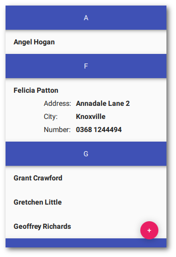

Qt Quick Controls - Contact List
A QML app using Qt Quick Controls and a C++ class that implements a simple contact list.
The Contact List Example shows how to integrate a C++ backend in a way that is compatible with Qt Quick Designer. For the declarative parts of the UI, .ui.qml files are used that can be edited visually in the Qt Quick Designer.

C++ Backend
The contact list application allows the user to add, edit, and remove contacts. The actual implementation is done in C++ and exposed as a QAbstractListModel.
The ContactModel C++ class is registered under a namespace and later imported and instantiated by MainForm.ui.qml. For more information about registering C++ classes as QML types, see Defining QML Types from C++.
#include <QtQml/qqml.h> ... qmlRegisterType<ContactModel>("Backend", 1, 0, "ContactModel"); ...
Designer Support
In the designer subdirectory, we create a plugin that replaces the ContactModel in Qt Quick Designer. For this to work we add the following line to contactlist.pro.
QML_DESIGNER_IMPORT_PATH = $$PWD/designer
Because Qt Quick Designer cannot instantiate the ContactModel C++ class, we define a mockup using a ListModel. This ensures that the ListView using the model shows something in Qt Quick Designer.
Running the Example
To run the example from Qt Creator, open the Welcome mode and select the example from Examples. For more information, visit Building and Running an Example.